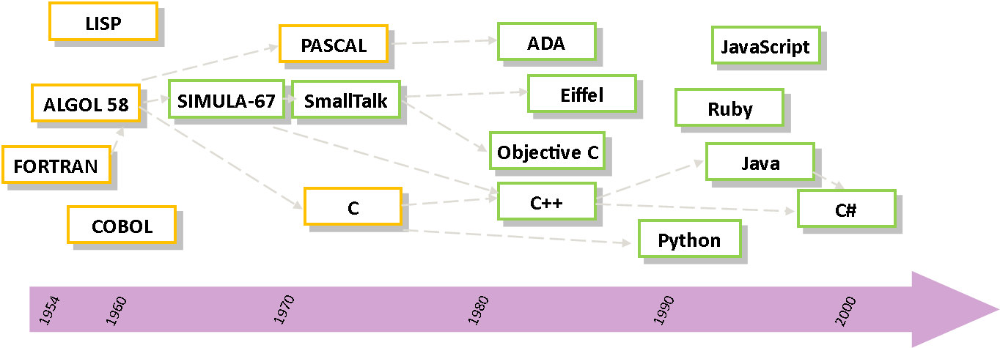

1 - Architecture logicielle
Objectifs
- Avoir des notions de bases sur la conception d'un programme informatique
Pré-requis
Aucun
Architecture logicielle
Les grandes phases de la conception d'un programme sont : l'analyse, l'algorithmie et la programmation.

Phase d'analyse
Avant de s'attaquer à la résolution d'un problème informatique, il est important de le formuler de façon précise dans la "langue de tous les jours". L'algorithme n'est alors finalement rien d'autre que la formulation dans un langage plus concis d'un problème clairement énoncé. Cette phase d'analyse doit être d'autant plus approfondie que le problème est complexe. Nous n'analyserons pas de la même façon la mise en place d'une chaîne de production automatisée dans une grande entreprise et le tri d'un tableau à 10 éléments.
Les personnes chargées d'analyser un problème important ont à leur disposition divers méthodes et outils (HBDS, SADT, UML, etc.) pour mener à bien leur projet.
L'algorithmique
Un algorithme est l'expression de l'ensemble des opérations à effectuer sur des ensembles de données pour aboutir à des ensembles de résultats.
L'algorithmique est la phase d'élaboration et d'écriture de l'ensemble des algorithmes nécessaire à la conception d'un programme ou d'un logiciel.
Passer par un langage algorithmique permet se concentrer sur les étapes de résolution d'un problème sans avoir à se soucier de la machine sur laquelle le programme devra fonctionner ou des spécificités du langage de programmation qui sera utilisé. Le travail de passage d'un langage d'algorithmie à n'importe quel langage de programmation n'est plus alors qu'une "simple" traduction appelée implémentation ou codage.
La programmation
La conception de logiciels pour des ordinateurs s'oppose à un premier problème :
- l'humain utilise un langage qui lui est propre;
- l'ordinateur parle en binaire (suite de 0 et de 1).
Pour pouvoir communiquer, il est dès lors nécessaire d'utiliser un langage :
- compréhensible par l'homme;
- traduisible en binaire par la machine.
C'est le langage de programmation. Un programme informatique est une succession d'instructions exécutables par l'ordinateur. La façon d'écrire un programme est très liée au langage de programmation que l'on a choisi. D'une manière générale, le programme est un simple fichier texte (écrit avec un traitement de texte ou un éditeur plus performant appelé IDE), que l'on appelle fichier source. Le fichier source contient lui-même des lignes de programmes que l'on appelle code source. Ce fichier, une fois terminé, doit être compilé ou interprété pour être exécuté par la machine.
Langages interprétés
L'interprétation consiste à parcourir un programme écrit dans un langage de programmation et à exécuter immédiatement les instructions équivalentes dans le langage machine. Le programme en langage machine n'est jamais vraiment écrit. Un programme écrit dans un langage interprété a besoin d'un programme auxiliaire (l'interpréteur) pour traduire au fur et à mesure les instructions du programme.
Les langages interprétés ont généralement l'avantage d'être plus portables (moins dépendants de l'environnement de la machine qui l'exécute).
Exemples de langages interprétés : BASIC, JavaScript, Ruby, PHP, PERL, etc.
Langages compilés
La compilation est une opération consistant à traduire le code source écrit dans un langage de programmation en langage machine. Cette traduction est effectuée par un programme annexe appelé compilateur qui génère donc un nouveau fichier autonome, c'est-à-dire qui n'aura plus besoin d'un programme autre que lui pour s'exécuter; on dit d'ailleurs que ce fichier est exécutable.
Un programme écrit dans un langage compilé a comme avantage de ne plus avoir besoin, une fois compilé, de programme annexe pour s'exécuter. De plus, la traduction étant faite une fois pour toute, il est plus rapide à l'exécution. De plus, un programme compilé garantit une meilleure sécurité du code source (le code binaire est difficilement déchiffrable).
Exemple de langages compilés: C, C++, Fortran, Pascal, Go, etc.
Remarque : la compilation se décompose en 2 étapes :
- le compilateur transforme le code source en code binaire (modification du code source, traduction en assembleur puis assemblage en binaire);
- l'édition de liens qui permet d'intégrer dans le fichier final tous les éléments annexes (fonctions, librairies, fonctionnalités utilisées par le programme mais disponibles dans d'autres fichiers, etc.) auxquels le programme fait référence mais qui ne sont pas stockés dans le fichier source).
Langages intermédiaires
D'autres langages appartiennent aux deux catégories à la fois. Dans ces cas là, le programme est d'abord pré-compilé dans un langage intermédiaire appelé généralement bytecode, qui est une sorte de langage machine de type assembleur qui n'est pas directement exécutable. Ce code nécessite ensuite d'être interprété. Par exemple, le Java fait appel à une machine virtuelle (la JVM) pour interpréter le bytecode préalablement généré.
Les programmes écrit en langage intermédiaire gagnent en portabilité (le code intermédiaire est le même pour toutes les machines) par rapport aux langages compilé, mais y perdent généralement en performance.
Exemple de langages intermédiaires : Python, Java, etc.
Petit historique des langages
Le premier langage de programmation universel de haut niveau est le Fortran (Formula Transistor), inventé en 1954. Il donnera ensuite naissance à l'ALGOL60 et au COBOL. Aujourd'hui, de nombreux langages de programmation, souvent construit à partir de ces premiers langages, ont vu le jour (Java, C++, Python, JavaScript, etc.).

Ingénierie des système d'information
L'ingénierie des systèmes d'information vise à transformer les besoins des utilisateurs en spécifications d'une application formalisées pour le développeur. Elle regroupe un ensemble de méthodes, techniques et outils aidant à la formalisation de spécifications. Le terme de brainware a été introduit en 1974 par Tosio Kitagawa mais reste assez confidentiel. L'ingénierie des système se développera vraiment à partir des années 1990 lorsque les systèmes informatiques à développer sont devenus plus complèxes.
Elle s'est rapidement constitué un ensemble de méthode techniques et outils visant à assurer la qualité des applications. Les activités de l'ingénierie des systèmes couvrent ainsi des domaines variés de la réalisation de programmes informatiques : conception, tests, documentation, méthode de développement, etc. Les méthodes de gestion de projet articuleront ces différents éléments entre eux.
Nous reviendrons dans d'autres cours sur le langage UML qui est utilisé pour modéliser des systèmes informatiques dans toutes leurs dimensions. Créé en 1995 par fusion d'outils existant, ce langage est aujourd'hui un standard de la conception en informatique. La méthode Merise de conception et développement de système informatiques est également très utilisé dans le monde professionnel.